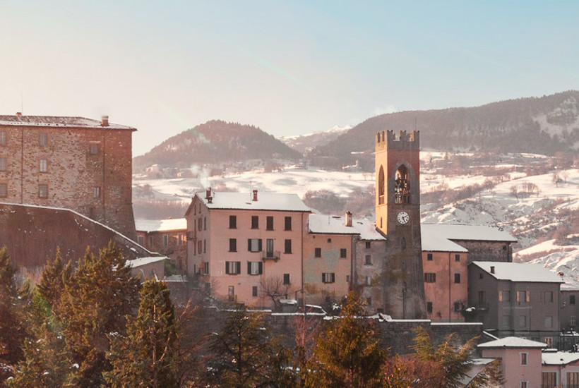
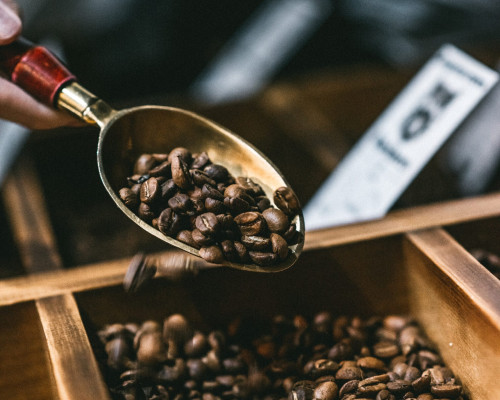
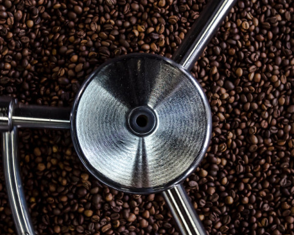
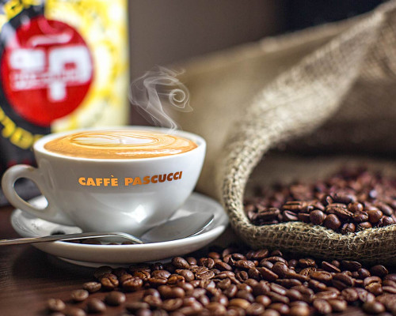

카페 파스쿠찌는 130년간 이어진 전통과 연구, 열정을 바탕으로 항상 최고의 커피를 위해 노력합니다.
이탈리아 중부, 생두 보관에 적합한 기후
천혜의 환경
이탈리아에서 수만 킬로미터 떨어진 산지에서 재배∙가공 되어 배에 실려 운반된 생두는 이동기간 동안 바다의 염분과 습기를 머금고 있기 때문에 로스팅 이전까지 습도∙온도의 조절과 관리를 통해 지속적으로 품질을 유지시킬 수 있도록 해야 합니다.
이탈리아 중부 ‘몬테 체리뇨네’(Monte Cerignone)는 파스쿠찌 가문에서 오랫동안 생두를 보관해온 곳으로 일년 내내 일정한 온도와 낮은 습도가 유지되는 천혜의 요새와 같은 곳입니다.
콘가(Conga)강 계곡 600m의 미기후(micr-oclimate)는 생두가 고유의 향미를 지속시키며 자연스럽게 시간에 따라 숙성시켜 나갈 수 있도록 하기 때문에 최신 시설의 생두 보관 창고 보다 깊이있고 산지의 기후와 작황에 상관 없이 일관된 커피 맛을 낼 수 있도록 합니다.
몬테 체리뇨네

이탈리아 커피문화의 대표
파스쿠찌 가문의 블렌딩
총 9가지 품종의 엄선된 생두는 전문가의 테스트를 통해 아라비카 80%, 로브스타 20% 비율로 블렌딩합니다. 파스쿠찌 가문이 로브스타를 블렌딩에 사용하는 이유는 에스프레소 본고장 이탈리아 커피문화에서 비롯합니다.
이탈리아에선 로브스타 종을 아라비카 종과 블렌딩해 에스프레소의 묵직한 바디와 깊은 쓴맛을 내는 걸 오랫동안 선호해 왔습니다. 아라비카 종의 산미, 그리고 풍부한 맛과 향에 로브스타의 구수하고 묵직한 바디감을 표현해 내는 것이 파스쿠찌 가문의 블렌딩 노하우 입니다.

생두 고유의 맛과 향미를 살리는
슬로우 로스팅
블렌딩을 할 때에는 균일하게 로스팅을 하는 것이 중요하기 때문에 특유의 노하우가 필요합니다. 파스쿠찌는 잘 배합된 블렌딩 생두를 중배전(미디움 로스팅)으로 슬로우 로스팅(Slow Roasting) 합니다.
슬로우 로스팅은 보통의 로스팅 시간 11~14분 보다 긴 15~18분 동안 중간 정도의 불세기로 천천히 로스팅하며 생두안의 수분을 자연스럽게 증발시키고, 안의 좋은 맛과 향미의 성분을 끌어내는 방식입니다. 이 방식은 에스프레소의 탄맛이 적고 특유의 바디감과 쌉쌀한 맛을 깨워 내는데 가장 중요한 과정 중 하나입니다.

이탈리아 전통의 맛과 경험을 위한
프리미엄 원두 - 골든 색
정통 에스프레소 커피의 특별한 맛과 경험을 구현하기 위한 골든 색(Golden Sack)은 이탈리아 파스쿠찌와 내부 연구원 및 소비자 테스트를 통해 검증을 받은 프리미엄 원두입니다.
골든 색(Golden Sack)으로 갓 추출한 에스프레소는 미디움 바디감은 물론 말린 과일의 신맛과 밀크초콜릿의 단맛의 조화가 뛰어납니다. 또한, 브라운 슈가, 쿠키, 구운 아몬드의 풍무한 아로마와 부드러운 목넘김 후 좋은 여운이 오래 남는 특징을 가지고 있습니다.
골든 색

전통과 정통을 잇는 밑거름
130년의 에스프레소 연구
1883년 파스쿠찌 가문이 생두 거래를 시작하고 커피업 확산의 발판이 되는 로스팅 공장 설립 이후, 이탈리아 에스프레소에 대한 연구를 적극적으로 시작하게 됩니다.
처음에는 단순히 생두에 대한 연구였으나 이후 에스프레소의 품질을 높이기 위해 농학자, 과학자 등의 전문가 집단으로 운영되는 자체 연구소를 설립하고, 생두별 역사, 결점두 기준 관리, 곰팡이 및 병충해 연구 등 생산지에서 지속적으로 높은 품질의 생두를 생산할 수 있도록 하는 연구로 확대되었습니다.
이를 통해 연구 환경이 열악한 생산 농가에게 다양한 정보를 제공하고 지속가능한 품질을 유지할 수 있도록 지원하고 있습니다. 파스쿠찌는 지속적인 연구와 정보의 공유를 통해 130년 동안 변하지 않는 에스프레소 맛을 유지할 수 있으며 산지와의 지속가능한 커피 산업을 만들어 나가고 있습니다.